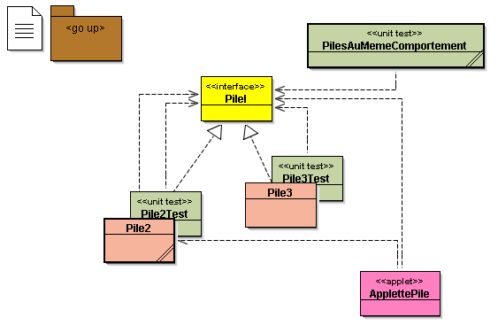
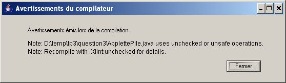

.1) Une pile d'"Object"s
.1) Une pile d'"Object"s
TP1
|
|
.1) Une pile d'"Object"s
Les éléments de la
classe Pile sont des instances de la classe
java.lang.Object
(classe racine de toute classe Java).
Le code d'une classe pile qui n'acceptait que des entiers
a été modifié
pour qu'elle accepte n'importe quel Object.
- Complétez la méthode actionPerformed de la classe ApplettePile et vérifiez ensuite le bon fonctionnement d'une pile via cette interface
Ci-dessous un exemple de l' ApplettePile (Essayez d'empiler des nombres, des mots, ...)
|
donnée →
contenu →
|
← sommet
|
|
AIDE : - champ.getText() permet de récupérer la String tapée dans le champ de saisie - champ.setText(uneString) modifie le contenu du champ avec uneString |
.2) Compilez la classe
"UneUtilisation", lancez main(), vérifiez l'affichage produit,
et comprenez l'exception produite.
package question1;
public class UneUtilisation
{
public static void main( final String[] pArgs) throws Exception
{
Pile p1 = new Pile(6);
Pile p2 = new Pile(10);
// p1 est ici une pile de polygones réguliers PolygoneRegulier.java
p1.empiler( new PolygoneRegulier(4,100) );
p1.empiler( new PolygoneRegulier(5,100) );
p1.empiler( "polygone" );
p1.empiler( new Integer(100) );
System.out.println( " la pile p1 = " + p1 );
try {
p1.empiler(new PolygoneRegulier(5,100));
// ....
Boolean vB = (Boolean)p1.depiler(); // <-- une exception est levée à l'exécution
} catch( final Exception pE ) {
pE.printStackTrace();
}
} // main()
} // UneUtilisation
Soumettez cette première question à l'outil d'évaluation
pour ne pas laisser passer de problèmes avant d'aborder
la question suivante.
 .1) Spécification : Interface
.1) Spécification : Interface
Soit l'interface spécifiant le comportement d'une pile (fichier PileI.java) :
package question2;
import question1.PilePleineException;
import question1.PileVideException;
public interface PileI
{
public final static int CAPACITE_PAR_DEFAUT = 6;
// à utiliser quand le paramètre du constructeur <= 0
public void empiler(Object o) throws PilePleineException;
public Object depiler() throws PileVideException;
public boolean estVide();
public boolean estPleine();
public String toString();
public Object sommet() throws PileVideException; // retourne le sommet de la pile
public int capacite(); // nb de cases
public int taille(); // nb d'elements presents
public boolean equals( final Object pO ); // si PileI et meme contenu
public int hashCode();
public Object clone() throws CloneNotSupportedException;
} // PileI
|
Attention :
- 6 nouvelles méthodes sont spécifiées dans PileI
(sommet, capacité, taille, equals, hashCode, et clone),
et donc toute implémentation de cette interface
doit implanter aussi ces 6 méthodes.
- Deux d'entre-elles vous sont fournies, mais cette note intitulée
"How
to avoid traps and correctly override methods from java.lang.Object"
peut vous être utile si vous voulez les comprendre.
|
AIDE : - Il nous faut convenir des critères pour décider si 2 piles seront égales ou non. - Un algorithme possible pour equals (voir aussi la javadoc) est donc :
|
(*) Facultatif : Si la condition 3 ci-dessus était "si p n'implémente pas PileI", comment feriez-vous ? (implémentation difficile, mais réflexion intéressante)
.1) Implémenter une interface :
PLUSIEURS implémentations UN SEUL comportement
Proposez 2 autres
implémentations des Piles (donc implémentant l'interface PileI).
Attention ! Pour l'utilisateur, ici
les piles doivent toujours être bornées
java.util.Stack<Object>
(Pile2.java)java.util.Vector<Object>
(Pile3.java)

Remarques :
Pile2 et Pile3 seront composées d'une instance d'une classe prédéfinie comme le suggère les extraits de code suivants :
import java.util.Stack; public class Pile2implements PileI,Cloneable {private Stack<Object> stk; ...}import java.util.Vector; public class Pile3implements PileI,Cloneable {private Vector<Object> v; ...}
| Cette approche est nommée par Mark Grand le
"Pattern delegation". Elle consiste à définir
une donnée d'instance d'une classe, ensuite utilisée
dans les méthodes. Ce pattern réalise une interface entre le client de la classe et l'implémentation effective par une classe de service. Il permet un couplage moins fort entre les deux classes que si l'une héritait de l'autre. |
Vérifiez le bon fonctionnement des classes de tests unitaires et ensuite le fonctionnement de votre applette.
ci dessous "ApplettePile" avec une implémentation de la classe Pile par délégation à la classe java.util.Stack<Object>
question 3-1) Généricité : un premier usage![[Image]](question3.jpg) Cette question supplémentaire n'a pas à être
soumise à évaluation par junit3 ni à être "rendue",
mais il est conseillé de la traiter en travail personnel.
Cette question supplémentaire n'a pas à être
soumise à évaluation par junit3 ni à être "rendue",
mais il est conseillé de la traiter en travail personnel.
L'interface pileI est désormais paramétrée par le type des éléments
package question3;
import question1.PilePleineException;
import question1.PileVideException;
public interface PileI<T> {
public final static int CAPACITE_PAR_DEFAUT = 6;
public void empiler(T o) throws PilePleineException;
public T dépiler() throws PileVideException;
public T sommet() throws PileVideException;
.../... } // PileI
question 3-2) Vérifiez le source de la classe Pile2<T> et modifier l'IHM ApplettePile, ce type de message obtenu à la compilation ne doit plus apparaître

question 3-3) Dans la méthode main de la classe UneUtilisation, proposez toutes les déclarations correctes afin que la compilation de cette classe s'effectue sans aucun message d'erreur ou alertes (sauf pour la méthode clone).
i.e. proposez les déclarations telles que p1 contient des éléments "de type PolygoneRegulier", p2 que des Piles de Polygone régulier , etc ...
import question1.PolygoneRegulier; public class UneUtilisation { public static void main(String[] args) throws Exception { PileI ... p1 = new Pile2 ... (6); PileI ... p2 = new Pile2 ... (10); etc ...Vérifiez ensuite que ces lignes extraites de la question 1 ne se compilent plus !
try { p1.empiler(new PolygoneRegulier(5,100)); String s = p1.depiler(); } catch(Exception e ) { e.printStackTrace(); } } }